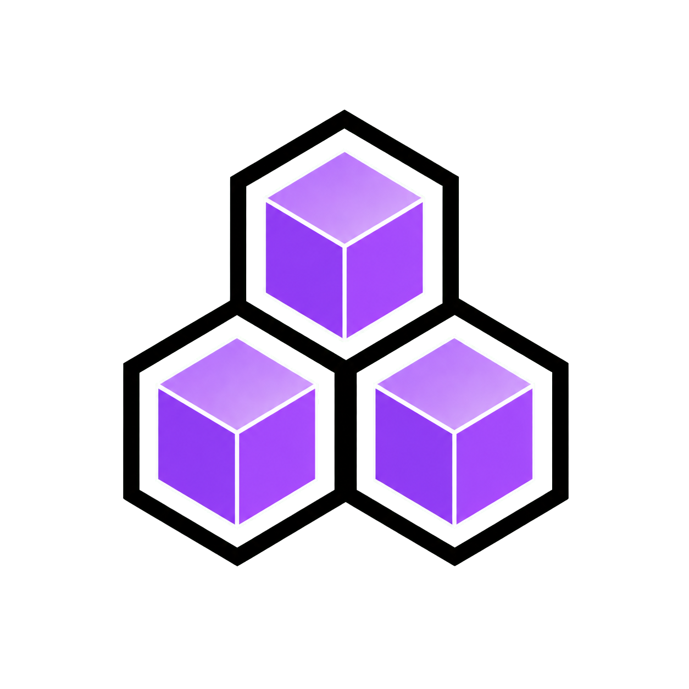
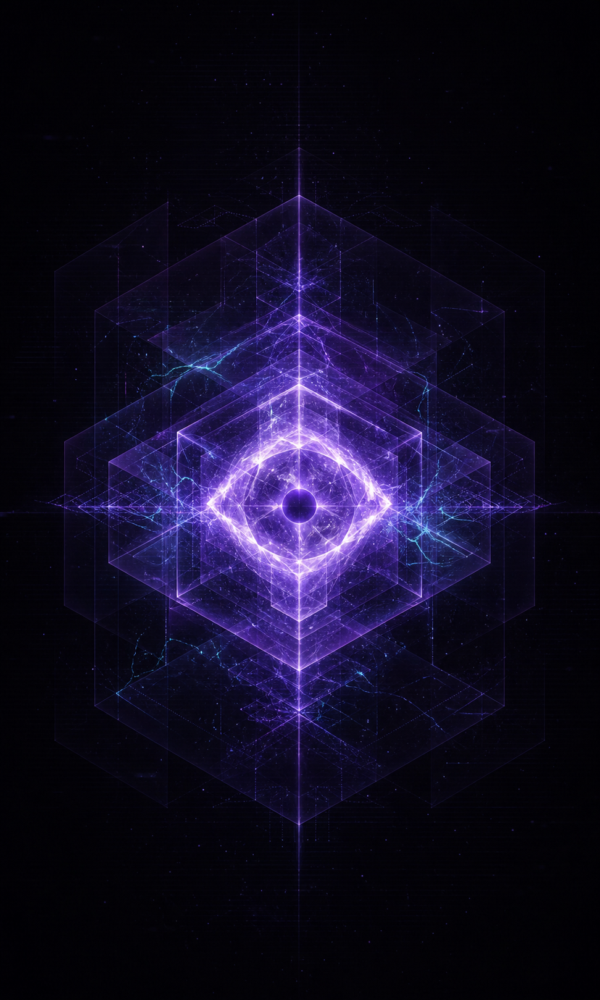
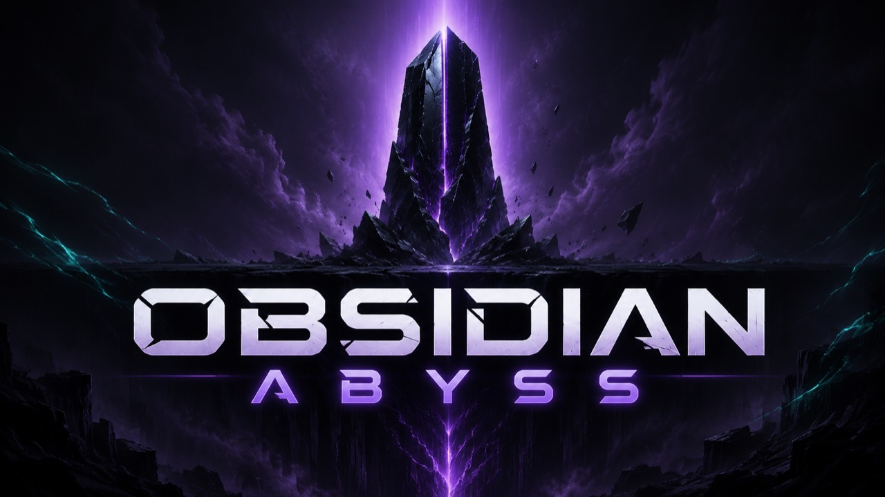

NOTE 01 / STUDIO POSITION
Working at the edge
We focus on questions whose consequences reach further than their first answer.

CRITICAL MASS LABS SYS.ONLINE
Research and development across systems, privacy, and experimental infrastructure.
ABOUT THE LAB
Critical Mass Labs is an independent research studio exploring emerging systems and experimental infrastructure, with care for privacy and long-term consequences.
R&D PORTFOLIO / 09 INDEXED PROGRAMS
Each program approaches a different edge of the system. Select an entry to view its current public status.
PROJECT 01 / ASYMMETRY
ASYMMETRY is a Critical Mass Labs research project exploring privacy-conscious coordination.

SKUNKWORKS INITIATIVE
Exploratory work around systems, simulation, and uncharted questions.
PUBLIC MATERIALS / OPEN REGISTER
Selected notes and research material appear here when they can be shared with useful context and appropriate restraint.
NOTE 01 / STUDIO POSITION
We focus on questions whose consequences reach further than their first answer.
NOTE 02 / PUBLICATION PRINCIPLE
Public material is released selectively: clear enough to be useful, restrained enough to be responsible.
REGISTER 03 / STATUS
Additional notes and research artifacts will be added deliberately over time.